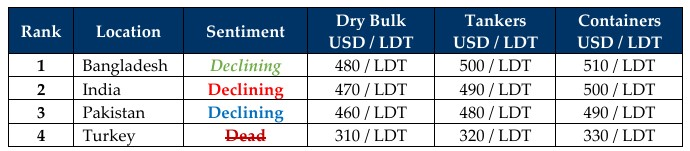

inWeekly Demolition Reports23/09/2024

Unlike anything seen in the movies and in what has been nothing short of a series of impressively coordinated & covertly organizedattacks that were executed with surgical precision this week, saw Mossad and the IDF plant explosives into several thousand Hezbollah pagers & walkie-talkies that were only recently circulated amongst the ranks on account of increased internal security. Within a short window of issuance, these devices were trigger detonated by the IDF this week, starting with the first wave of pager detonations on Tuesday, followed by a second wave of exploding walkie talkies that were similarly in the hands of Hezbollah members who had gathered to mourn those that had passed in the attacks a day prior, cumulatively killing several dozen across Lebanon and critically injuring several hundreds more. After wiping out Hamas’s major Rafah brigade, PM Netanyahu’s vow to eliminate Hezbollah saw Israeli jets further leveling thousands of Hezbollah missile launchers across Lebanon that were primed in retaliation to the recent attacks, in addition to leveling a city block in Beirut where senior Hezbollah commanders reportedly met to discuss further attacks. As the world remains assured of an impending IDF assault against the Houthi’s for targeting Ben Gurion airport, looming further North is a growing swell of ISIS fighters who are targeting various U.S. bases across Iraq in support of the Muslim Brotherhood, as Ukraine’s successful incursions across Western Russia themselves saw Russian depots, cities, & even infrastructure targeted, as the region gradually turns into a large Powder Keg being drug into war.
On the Macro end of the global ship recycling front, fundamentals remain shaky as Indian and Pakistani steel plate prices reported unexpected (and surprising) moves bought on by the 30% tariffs levied on a variety of goods being imported from China, and the U.S. Dollar continues to belly dance around the various recycling nation currencies reporting the (comparatively) worst week for the Bangladeshi Taka, as the interim government continues struggling to control the currency since May. The free flow of turmoil since the start of the year has therefore seen vessel offers fall firmly by over $90/Ton since the highs of +USD 600/LDT, down to firmly below USD 500/LDT even on favored container units in India, in light of MSC’s strictly India only HKC pre-approved yard list policy, which certainly (yet briefly) perked not only the mood in Alang, but even the incoming volume of tonnage at Alang’s waterfront amidst a bevy of prompt MSC sales that were truly the recycling highlight of the week, especially for dreary Indian ship recyclers who were just happy being greeted with an irregular dosage in the supply of tonnage.
Indeed, limited and even laughable offers continue emanating from the various sub-continent shores as recyclers remain nervous about current ongoings and even about the immediate future, as the industry would logically prefer to see a few weeks of global and currency stability, before putting down firm offers on any viable units. Whilst the inertia remains staggered and dire ship owners are abstaining from introducing any fresh vessels into the market, unwilling to accept the lowly ongoing prices, these remain concerning times for global ship recycling markets even though the general feeling is that a bottom may have been reached and the only way is up from here. Unless the Middle East has different plans for 2025.
For Week 38 of 2024, GMS Market Rankings / vessel indications are as below.

📄 Download PDF: Ship-recycling-market-insight-Week-38-9-20-2024-Powder-Keg.pdfSource: GMS,Inc.https://www.gmsinc.net/gms_new/index.php/web